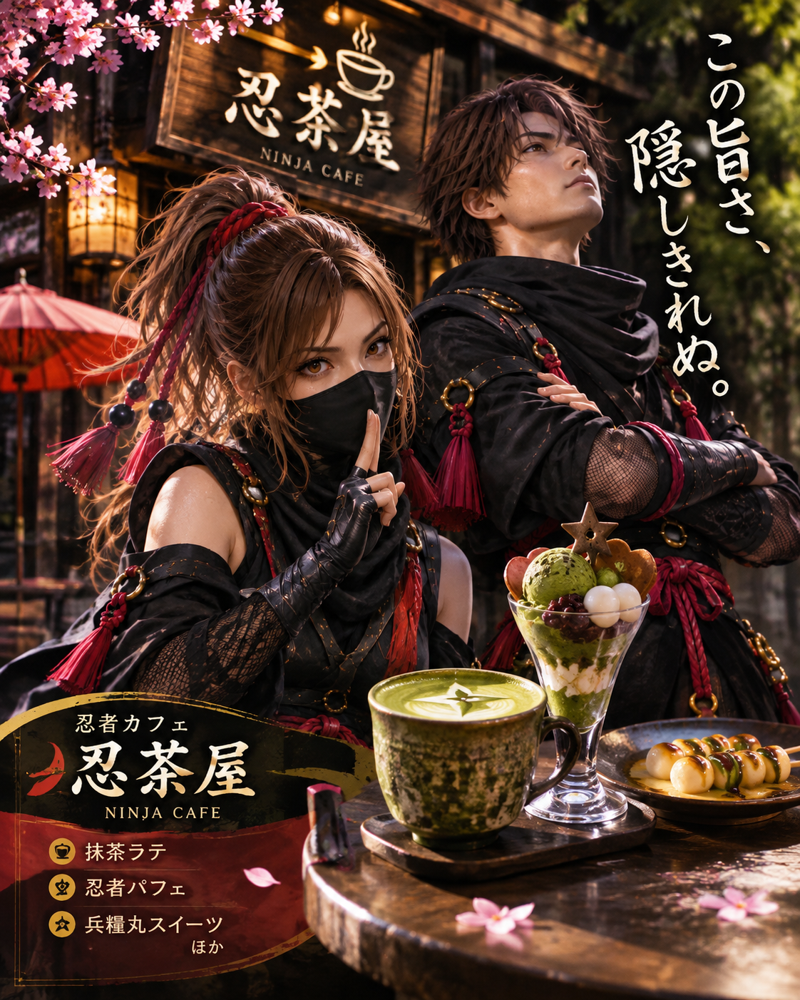
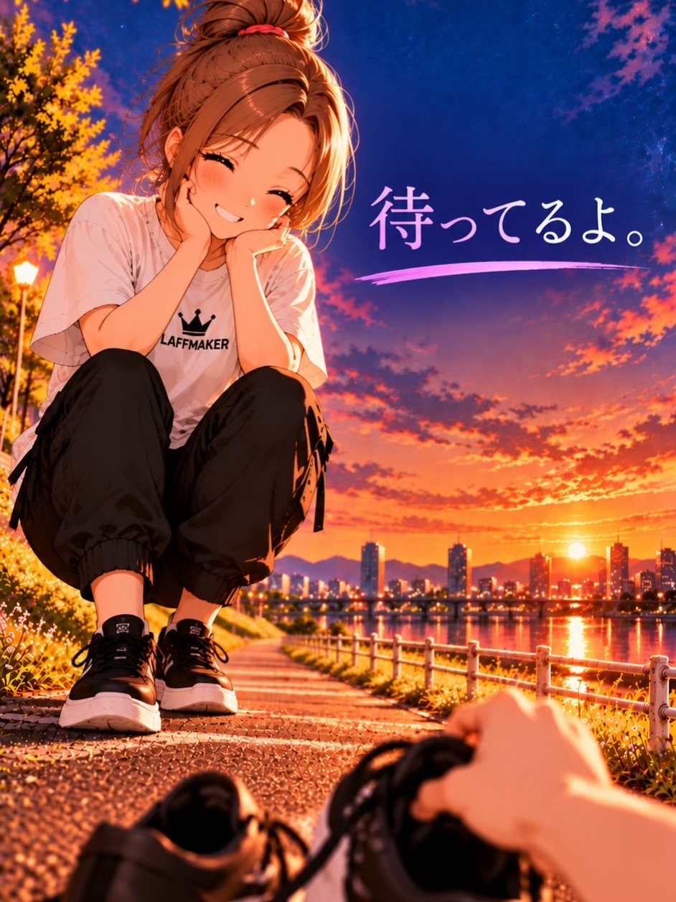

WELCOME TO LAFFMAKER思いついたものを、
思いついたものを、
カタチに。
笑いをひとつでも多く。
02 — ABOUT
思いついたことを、カタチに。
毎日、楽しいことばかりじゃない。
悲しいこともあるし、嫌なことだってある。
でも、そんな日々の中で、笑えることがひとつでも多かったら。
それだけで、ちょっといい一日になる気がする。
「こんなのあったら面白そう」
「これがあったら便利かも」
そんな思いつきを、思いつきのままで終わらせず、カタチにしてみる。
それで誰かが笑ってくれたら、つられてこっちも笑ってしまう。
そんな想いから、LAFFMAKERのものづくりは生まれている。
笑いをひとつでも多く。
LAFFMAKER
03 — WORKS
つくったもの。
アイデアをカタチにした制作例。
04 — SERVICES
できること。
01
LINEスタンプ制作
毎日の会話がちょっと楽しくなるスタンプを制作します。


02
キャラクター・イラスト・SNS素材
用途や雰囲気に合わせたビジュアルをカタチにします。
03
LP・Webサイト制作
伝えたいことが伝わるページづくりをお手伝いします。
05 — PLAYGROUND
LAFF LAB.
ここは思いつきを実験する場所。素材をドラッグして、ふたつを重ねてみよう。
♥
✦
☁
ϟ
DRAG & MIX
スマホでは素材を順番にタップしても実験できます。
06 — PRICE
料金のご案内。
LINEスタンプ制作
8個 2,000円
16個 3,000円
24個 4,700円
32個 6,300円
40個 8,000円
追加オプション ＋300円／個
キャラクター・イラスト制作
キャラクター一式 4,000円
キャラクター制作なし 3,000円
※ 料金区分の詳細は公開前に確認します。
Webサイト制作
制作内容・規模に応じて個別にお見積もりいたします。
07 — CONTACT
その思いつき、聞かせてください。
「こんなの作れる？」というご相談から、お気軽にどうぞ。